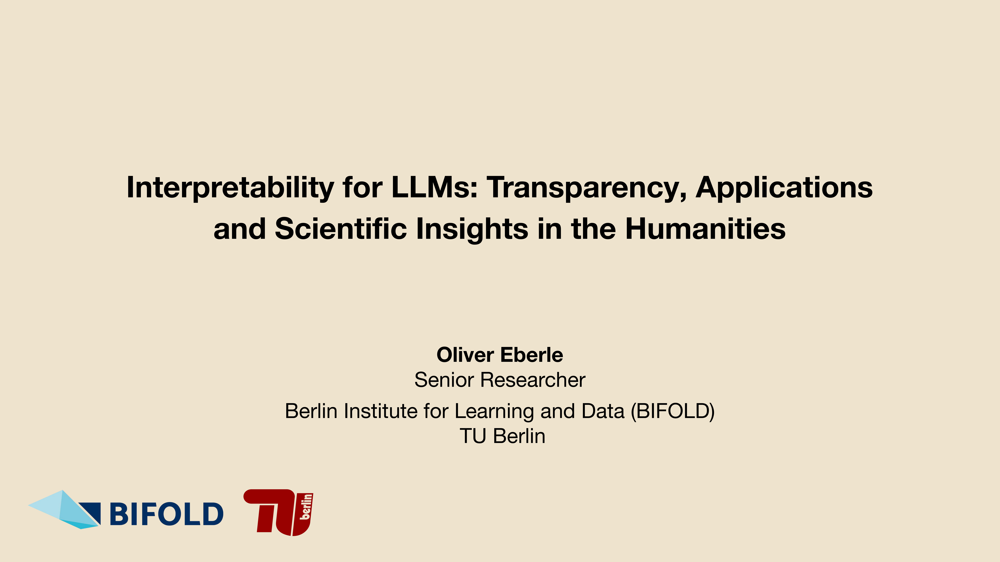
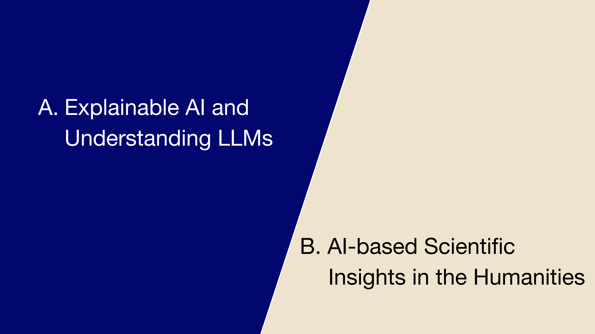
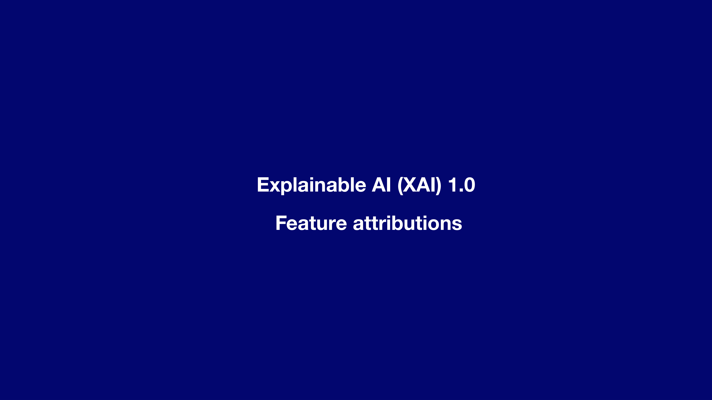
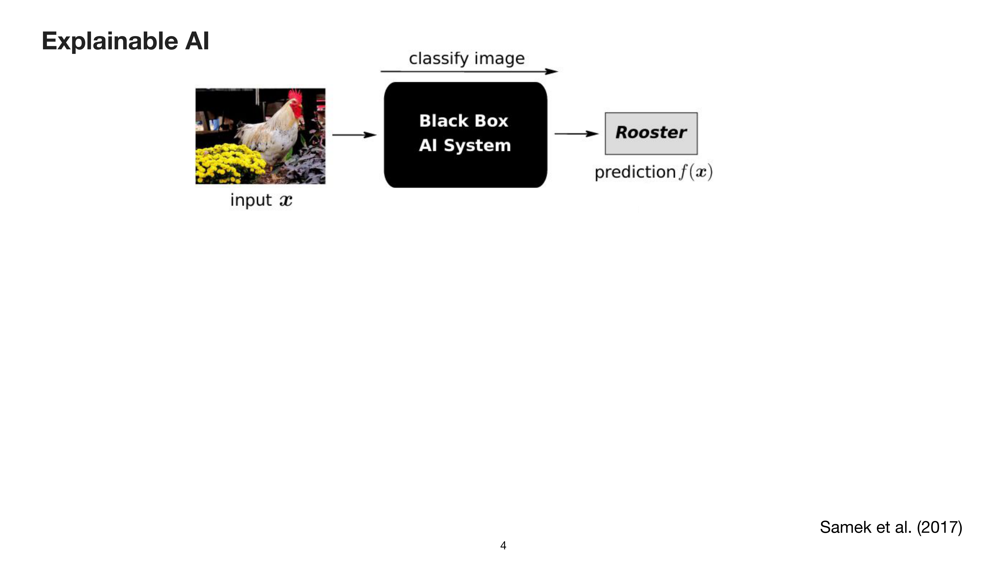
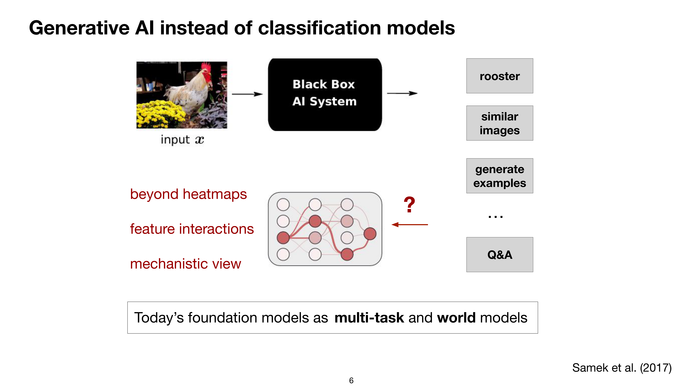
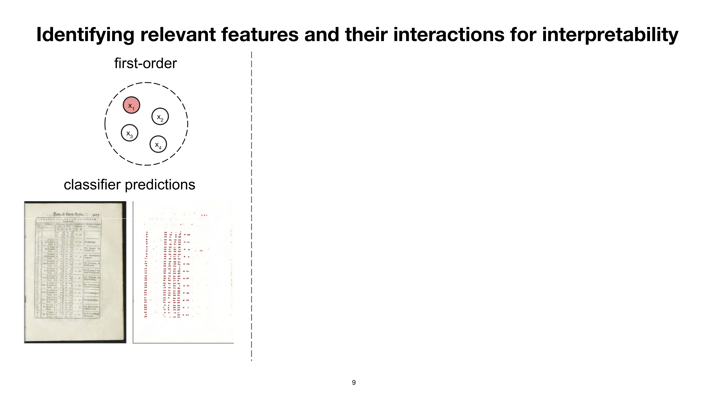

7 Explainable AI and AI-based Scientific Insights in the Humanities
Overview
This presentation elucidates the dual application of Artificial Intelligence: firstly, in enhancing the interpretability of complex models through Explainable AI (XAI); and secondly, in generating novel scientific insights within the humanities. The authors initially delineate XAI 1.0, focusing on feature attributions via heatmaps for classification models, whilst underscoring the imperative to verify predictions, identify biases, and ensure regulatory compliance. The discussion then transitions to XAI 2.0, which addresses the complexities of Generative AI and Large Language Models (LLMs) by exploring structured interpretability, feature interactions, and mechanistic views.
The work demonstrates that models can exhibit surprising errors, such as misclassifying objects based on correlated features or failing at multi-step planning tasks. To overcome the limitations of first-order explanations, the research introduces second-order (pairwise relationships) and higher-order (graph structures, feature walks) attributions. These reveal more intricate model behaviours and expose simplistic underlying strategies in embedding models. Specific examples illustrate how XAI uncovers biases in sentiment prediction and reveals LLMs’ tendency to prioritise recent information in long-context summarisation.
Within the humanities, the presentation showcases AI’s utility through several compelling case studies. The research team employed heatmap-based approaches to extract visual definitions from corpora of mathematical instruments, identifying fine-grained scales as crucial features. A significant project involved corpus-level analysis of early modern astronomical tables, such as the Sphaera and Sacrobosco Corpora. Here, a bespoke statistical model generating bigram representations proved remarkably effective where conventional Foundation Models failed, primarily due to heterogeneous, out-of-domain historical data. This innovation led to the concept of the “XAI-Historian,” enabling data-driven hypothesis generation at scale. Crucially, cluster entropy analysis, applied to publishing locations, revealed distinct patterns of innovation and control, identifying Frankfurt as a prominent reprinting hub and Wittenberg as a centre where political influence actively shaped the print programme. The presentation concludes by acknowledging the challenges of low-resource data and out-of-domain transfer for LLMs in humanities research, whilst affirming the transformative potential of Machine Learning (ML) and XAI for scaling scholarly inquiry and fostering new research directions.
7.1 Explainable AI and AI-based Scientific Insights in the Humanities

This presentation delineates two principal areas of inquiry. Initially, it explores Explainable Artificial Intelligence (XAI), focusing on developing methodologies to comprehend the intricate operations of complex Large Language Models (LLMs). Subsequently, the discussion shifts to the application of AI for generating scientific insights, particularly within the humanities.
7.2 Explainable AI (XAI) 1.0 Feature Attributions
This section provides a concise introduction to Explainable Artificial Intelligence (XAI), outlining the core concepts that the machine learning community defines as ‘explanation’.
7.3 Explainable AI
Historically, machine learning predominantly focused on visual data, with a more recent surge of interest in language emerging over the past decade. To comprehend the internal workings of ‘black box’ machine learning models, Samek and colleagues (2017) typically examined classification tasks. For instance, an input image, such as a rooster, would yield a prediction like “Rooster”; however, users generally possessed no insight into the underlying basis for this classification.
7.4 Post-Hoc Explainability

The field of explainable AI has dedicated approximately a decade to tracing the origins of model predictions. Typically, this endeavour yields outputs such as heatmaps, which delineate the specific input features—for example, pixels—responsible for a given prediction, such as the recognition of a rooster.
Beyond merely elucidating model behaviour, explainability serves several crucial purposes. It enables the verification of predictions, ensuring that models operate reasonably, and facilitates the identification and correction of errors by illuminating how mistakes occur. Furthermore, explainability offers profound insights into the underlying problem domain, as models frequently uncover surprising solutions. Increasingly, it also ensures compliance with evolving regulatory frameworks, such as the European AI Act.
7.5 The Advent of Generative AI

The scenario of classification models, prevalent until approximately five years ago, has now given way to the era of Generative AI. Contemporary models exhibit remarkable versatility, performing diverse functions such as classification, identifying similar images, generating novel images, and answering a broad spectrum of questions. This expanded capability, however, significantly complicates the task of grounding predictions or answers from Large Language Models (LLMs) to their specific inputs.
Consequently, the field necessitates moving beyond conventional heatmap representations, exploring feature interactions and adopting more mechanistic perspectives to achieve deeper understanding. Crucially, today’s foundation models function as both multi-task and ‘world models’, offering profound insights into societal dynamics and the evolution of textual features over time.
7.6 Model Limitations and Unexpected Errors

Models frequently exhibit surprising errors, as evidenced by two prominent examples. In object detection, Lapuschkin and colleagues (2019) demonstrated how a standard classifier incorrectly identifies a boat by focusing on the surrounding water—a correlated and texturally simpler feature—rather than the boat itself. Furthermore, Large Language Models (LLMs) can falter in multi-step planning tasks. For instance, when presented with the Tower of Hanoi puzzle, Mondal, Webb, and their team (2024) observed that an LLM might immediately attempt to move the largest, inaccessible disc, thereby failing to comprehend the inherent physical constraints of the problem.
7.7 XAI 2.0 Structured Interpretability

Whilst more recent reasoning models may exhibit improved performance, the aforementioned Tower of Hanoi example originated from a standard Llama 3.x model. This section now shifts focus to structured interpretability, exploring methodologies that extend beyond conventional heatmap visualisations.
7.8 First-Order Explanations and Classifier Behaviour
First-order explanations, often visualised as heatmaps, prove particularly useful for elucidating classifier behaviour. For instance, the authors employed a table classifier on historical documents, aiming to distinguish specific subgroups of historical tables. After training the classifier, they verified its predictions using heatmaps, confirming that the model accurately focused on numerical content. This numerical focus served as an effective proxy for identifying numerical tables within the corpus.
7.9 Second-Order Features: Pairwise Relationships
The team also investigated second-order features, specifically focusing on pairwise relationships such as similarity. Their method involved computing a dot product or similarity score between the embeddings of two entities, for example, two images. To explain these similarity predictions, they found that representing the interaction between features proved highly effective. This approach revealed interactions between specific digits, indicating identical tables and thereby verifying the model’s intended functionality.
7.10 Higher-Order Interactions and Graph Structures

In more recent investigations, the authors have explored graph structures, discovering that higher-order interactions offer more meaningful insights. This approach applies to various networks, such as citation networks or networks of books and entities, typically trained on classification tasks. Here, relevant features emerge as feature subgraphs or feature walks, representing sets of features that become significant collectively. This methodology aims to yield more complex insights into models, ultimately progressing towards a circuit-level understanding of their operations.
7.11 First-Order Attributions in LLMs

This section presents illustrative examples drawn from the domains of language and the humanities.
7.12 Biased Sentiment Predictions in Transformer LLMs
Ali and colleagues (2022) investigated biased sentiment predictions within Transformer Large Language Models (LLMs) by analysing the feature importance of names in movie reviews. Employing a standard sentiment prediction scenario, common within the language community, they ranked sentences and computed heatmaps using a novel method specifically designed for transformers. Their findings revealed a notable bias: positive sentiment predictions correlated with male Western names such as Lee, Barry, Raphael, or the Cohen Brothers, whilst negative scores were more likely associated with foreign-sounding names like Saddam, Castro, or Chan. This study underscores the utility of Explainable AI in detecting such fine-grained biases within models.
7.13 First-Order Attributions for Long-Range Dependencies in LLMs
Jafari and colleagues (2024) explored first-order attributions for long-range dependencies in Large Language Models (LLMs), specifically examining text summarisation for extensive inputs, up to an 8,000-token context window. In a typical LLM scenario, users provide long texts, such as Wikipedia articles, and request a summary, which the model then generates as free text. Their investigation sought to determine the extent to which token dependencies spanned the input and whether models effectively utilised long-range information.
Findings indicated that models predominantly focus on the later sections of the context, prioritising information presented closer to the prompt. Although models can draw upon information from the very beginning of the context, this occurs significantly less frequently, as evidenced by a log scale of counts. Consequently, summaries generated by LLMs may not offer a balanced representation of the entire input text, a crucial consideration for users.
7.14 Second & Higher-Order Interactions in Text

The authors investigated second and higher-order interactions within textual data, employing a standard embedding scenario involving sentence pairs, such as “a cat I really like, it is a great cat.” Utilising models like the Bird model or a sentence Bird model, they observed that whilst a similarity score was produced, the underlying reasons for its specific value remained opaque.
The solution emerged through second-order explanations, which yielded interaction scores between individual tokens. These scores revealed that models primarily relied on simplistic strategies, such as noun matching (including synonyms and identical noun tokens), and to a lesser extent, noun-verb interactions, alongside separator and other token interactions. This reliance on basic strategies stems from the models’ inherent need to compress vast amounts of information. Understanding these mechanisms proves crucial when embedding data and subsequently computing rankings between them.
7.15 Graph Neural Networks for Structured Predictions

Graph Neural Networks (GNNs) offer a powerful mechanism for structured predictions, providing attributions in terms of ‘walks’ that represent interactions between features. Notably, GNNs, which inherently encode structural information, can be conceptualised as Large Language Models (LLMs) because the attention network within LLMs dictates which tokens can engage in message passing. This conceptual framework facilitates the analysis of language structures.
7.16 Interaction of Nodes and Complex Language Structure
Schnake and colleagues (2022) demonstrated how the interaction of nodes in graph structures enables the learning of complex language structures, particularly in sentiment analysis. Recognising that the hierarchical nature of natural language aligns well with graph structures, they trained a Graph Neural Network (or an LLM) on a movie review sentiment task and extracted ‘walks’ to understand its decision-making.
For instance, in the sentence “First I didn’t like the boring pictures, but it is certainly one of the best movies I have ever seen,” a first-order explanation would fail to capture the complexity, potentially assigning a high score to “like” despite its negation. Conversely, a higher-order explanation accurately assigns a negative score to the initial negative clause and correctly identifies the positive sentiment and hierarchical structure in the latter part of the sentence. This work highlights the superior interpretability offered by higher-order methods.
7.17 AI-based Scientific Insights in the Humanities
The discussion now transitions to the second principal area of inquiry: the generation of AI-based scientific insights within the humanities.
7.18 Extracting Visual Definitions from Corpora
El-Hajj, Eberle, and their colleagues (2023) initially explored heatmap-based methods for extracting visual definitions from corpora, focusing on a collection of mathematical instruments. Their objective involved classifying these instruments into categories such as ‘machine’ or ‘mathematical instrument’. Collaborating closely with historians, including Matteo Valeriani and Jochen Büttner, the team meticulously verified the visual definitions, underscoring the critical role of domain experts in ensuring the meaningfulness of such classifications. A key finding revealed that fine-grained scales present on the mathematical instruments were highly relevant for the model’s decision-making processes.
7.19 Corpus-Level Analysis of Early Modern Astronomical Tables
In their most extensive collaborative project, the authors undertook a corpus-level analysis of early modern astronomical tables, specifically focusing on numerical data. They utilised the Sphaera Corpus, an early modern text collection spanning 1472 to 1650, and the Sacrobosco Table Corpus (1472-1650). Historians expressed keen interest in developing an automated method for matching tables with similar semantics, a task previously unfeasible at scale. This significant endeavour is detailed in works by Valeriani and colleagues (2019) for the Sphaera Corpus and Eberle and colleagues (2024) for the Sacrobosco Table Corpus.
7.20 The XAI-Historian: Enabling Historical Insights at Scale

Collaborating with historians, Eberle and colleagues (2024) developed a sophisticated workflow to facilitate historical insights at scale, coining the term “XAI-Historian” to describe a historian leveraging AI and Explainable AI. This approach aims to uncover novel case studies and enable data-driven hypothesis generation.
The project focused on historical tables, which serve as crucial carriers of scientific knowledge processes, such as mathematisation, within the Sacrobosco Corpus—a collection of 76,000 pages of university textbooks from 1472 to 1650. A significant machine learning challenge arose from the data’s extreme heterogeneity, limited annotations, and the failure of conventional Optical Character Recognition (OCR) and Foundation Models (FMs).
The devised workflow encompassed three key stages: initially, data collection from book images; subsequently, atomisation and recomposition, involving input tables, bigram maps, and histograms; and finally, corpus-level analysis, which included embedding historical tables and assessing data similarity.
7.21 Verifying Models and Features with XAI and Historians
Eberle and colleagues (2022, 2024) crafted a statistical model specifically designed to generate bigram representations of historical tables, addressing the challenge posed by foundation models’ inability to process such out-of-domain data effectively. This bespoke model underwent rigorous verification: by detecting identical bigrams—for example, ‘38’ on two distinct inputs—the team confirmed its reliable operation, thereby establishing trust in its decisions.
The methodology involved representing tables as a bag of bigrams, such as ‘01’ or ‘21’, and, given the limited annotations, employed a combination of a learned feature extractor and a hard-coded structure.
7.22 Cluster Entropy Analysis for Innovation Diffusion

In a compelling case study, the authors applied cluster entropy analysis to investigate the diffusion of innovation across early modern Europe. Their focus centred on the publishing output of specific cities, each producing distinct “programmes” of textual types. Some cities exhibited diverse print programmes, whilst others concentrated on reprinting existing works; critically, this phenomenon had previously defied analysis at scale. The methodology involved calculating the difference between the observed cluster entropy H(p) and the maximum attainable entropy for each print location, drawing upon data from the Sphaera publication EPISD-626.
7.23 Insights from Cluster Entropy: Frankfurt and Wittenberg

The team devised a clustering approach, leveraging the model’s representations to compute a distance-based clustering and subsequently assess the diversity of print programmes produced by individual cities. They employed entropy as a metric: low entropy indicated a consistent reproduction of identical content, whilst higher entropy signified a more diverse print programme.
This analysis identified two particularly compelling cases with the lowest entropy scores: Frankfurt am Main and Wittenberg. Frankfurt am Main was already recognised as a major centre for reprinting editions. More notably, Wittenberg presented a historical anomaly where the political control exerted by Protestant reformers, particularly Melanchthon, actively restricted the print programme, dictating the curriculum to be published. This finding, detailed by Eberle and colleagues (2024), not only revealed a previously unquantifiable historical pattern but also corroborated existing historical intuition and scholarly support.
7.24 Conclusion: AI-based Methods for the Humanities
Concluding the discussion, the presenter highlighted several key points regarding AI-based methods in the humanities. Whilst humanities and Digital Humanities (DH) researchers have primarily concentrated on the digitisation of source material, the automated analysis of these corpora presents significant challenges due to data heterogeneity and a scarcity of labels. Multimodality also emerges as a crucial consideration.
Nevertheless, the integration of Machine Learning (ML) and Explainable AI (XAI) holds substantial promise for scaling humanities research and fostering novel research directions. Foundation Models and Large Language Models (LLMs), coupled with prompting techniques, can effectively support intermediate tasks such as labelling, data curation, and error correction. However, their utility for addressing more complex research questions remains limited.
Significant challenges persist, notably the issue of low-resource data for ML, which impacts scaling laws. Furthermore, out-of-domain transfer, particularly for historical and small-scale datasets, necessitates rigorous evaluation, as current LLMs are predominantly trained and aligned for natural language tasks and code generation.